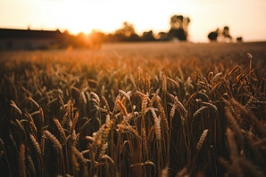
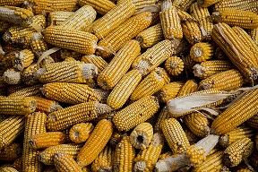
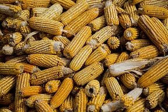
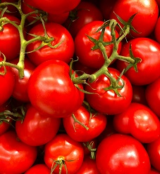
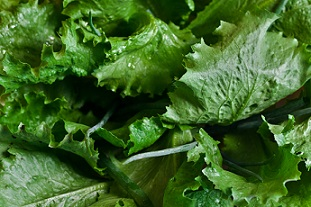
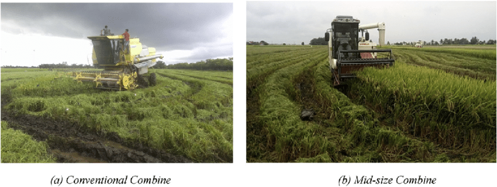

Wheat
High-grade durum wheat that's ready for processing.
 
USDA grade No. 1 sweet corn available for wholesalers. Lower grades available for additional uses (corn ethanol, etc.).

Tomatoes
USDA grade No. 1 tomatoes - beefsteak, cherry, and roma varieties available. Smaller batch heirlooms for select restaurateurs.

Lettuce
USDA grade fancy lettuce varieties available: Crisphead (Iceberg), Romaine, and Bibb.

Potatoes
USDA grade No. 1 and commercial potato varieties available: Yukon Gold, Russet, and Red Gold.
Additional Services & Products

Harvesting
Harvesting services available for local farms. Available through renting our equipment or hiring our services.
Hauling and Transport
Available to transport goods or equipment.